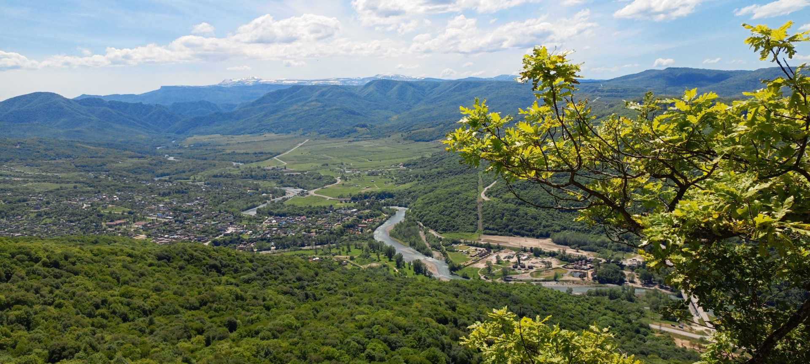
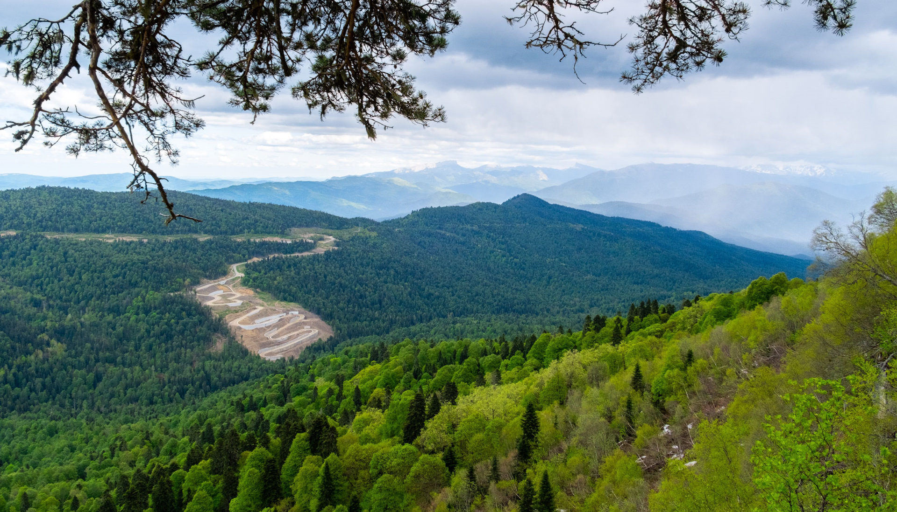
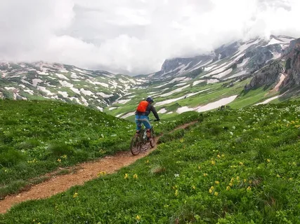

Маршрут начинается от турбазы "Лаго-Наки" и идёт в сторону хребта Уна-Коз. Вы проедете по горным грунтовкам через альпийские луга с видом на Главный Кавказский хребет. Финальная точка — водопад Молочный, один из самых высоких водопадов Адыгеи. Маршрут требует хорошей физической подготовки и опыта катания в горах.
Из Майкопа: На автомобиле до турбазы "Лаго-Наки" (около 110 км по трассе А-159). Дорога горная, требует осторожности.
Свои велосипеды: Лучше использовать велосипеды с прочной подвеской и широкими покрышками.
Прокат: Велосипеды можно арендовать в посёлке Каменномостский.
Координаты старта: 44.1333° N, 40.2000° E